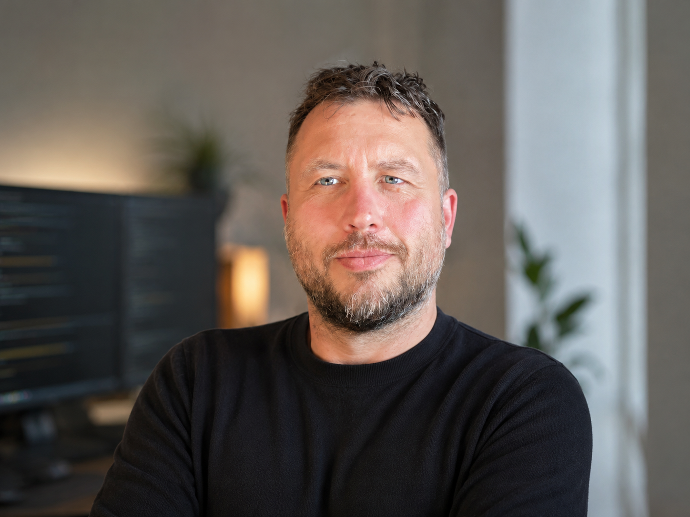

ITder bliver ved med at virke.
Jeg hjælper små og mellemstore virksomheder med at gøre deres IT enklere, mere sikker og lettere at drive. Ét skridt ad gangen. Åbne standarder. Mindre leverandørafhængighed. Løsninger, du kan forstå.
Teknologi skal gøre virksomheder friere – ikke mere afhængige.
Frihed frem for afhængighed
Små tiltag. Stor effekt.
Har I systemer, der stadig løser vigtige opgaver? De skal ikke nødvendigvis skiftes ud. Ofte kan de forbedres, integreres og gøres lettere at drive.
Jeg hjælper med konkrete, afgrænsede forbedringer: mindre leverandørafhængighed, bedre drift, mere sikker adgang og mere overblik over den IT, I allerede har.

Om Moose Rocket
Hej, jeg hedder Thomas.
Jeg har brugt de sidste mange år på at bygge, automatisere og drive IT-systemer, der skal virke hver eneste dag.
Det har lært mig én ting: God IT handler sjældent om at starte forfra. Den handler om at bygge videre på det, der allerede virker.
Jeg tror, den bedste IT er den, du næsten aldrig lægger mærke til.
Derfor bygger jeg små, forståelige løsninger baseret på åbne standarder og designet til at kunne drives i mange år.
Jeg tror på ærlig rådgivning, små forbedringer og løsninger, der holder.
Din drift. Din platform. Dine data.
Har I et konkret problem med jeres IT? Lad os tage en uforpligtende snak.
thomas@mooserocket.dk